Copia is for buying food from your neighbors, the people who grow it — built the way a farmers market feels: calm, personal, unhurried.
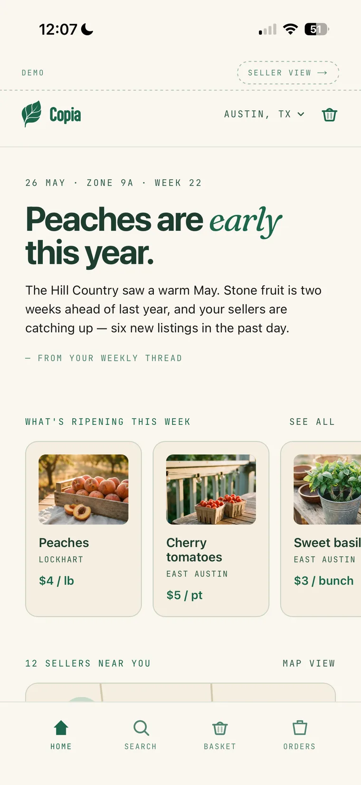
I founded Copia in my MBA in 2021, as EDEN. We pitched VCs and were offered $1.2M. I declined: I was the only founder all-in, and I had no technical co-founder to build with. By 2026, AI had removed that barrier — so I went back and built what I’d envisioned all along, alone, directing AI through every screen and every sentence. Seventeen build days, live in production.
And the surprise: people value local over organic. Some actively avoid the organic label.
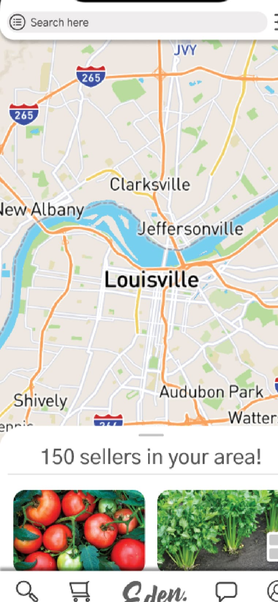
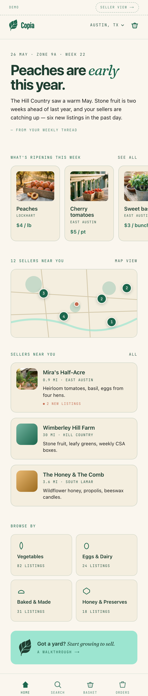
The 2021 wireframe says “cart” and “150 sellers in your area!” The 2026 product contains neither the word nor the punctuation. The rebuild kept the mint and the gummy wordmark; the discipline is new.
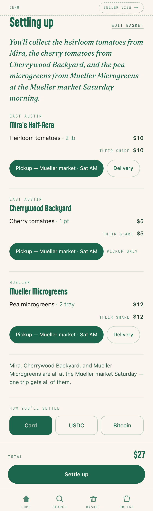
Every grower group picks pickup or delivery; deliveries consolidate into one courier run with one fee. The whole plan reads back as a sentence: “You’ll collect the heirloom tomatoes from Mira at the Mueller market Saturday morning.”
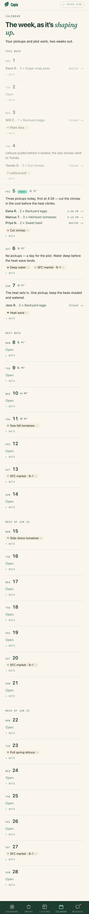
Nobody buys squash a month out, so the seller calendar is an agenda bounded at four weeks. The genre default would have fought how fresh food is actually bought.
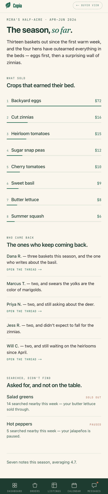
Built with no charting library. A grower’s question isn’t “what’s my trend line” — it’s “what happened, and what should I do Saturday.”
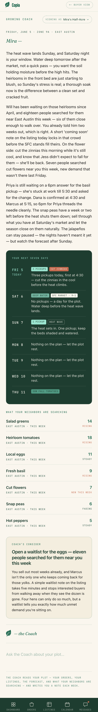
The Coach reads your plot — orders, listings, the forecast, what neighbors are searching — and writes you a weekly note. Disclosed in the product’s own voice; no “Powered by” badge.
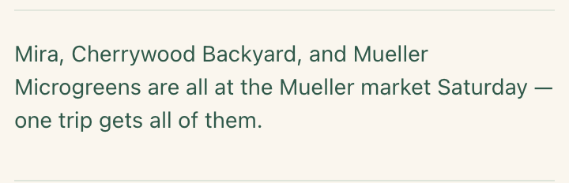
When two growers share a market day, the page suggests one trip. That’s geometry, not a model — knowing where not to use AI is part of AI design.
Before any of it was code, it was wireframes. Copia’s first life was 2021, as EDEN — I designed the branding, the onboarding, and a full low-fidelity buyer flow, sketched and iterated screen by screen in Figma. That groundwork is what made the 2026 rebuild fast: I wasn’t inventing the product while directing the build, I was executing a plan I’d already drawn.
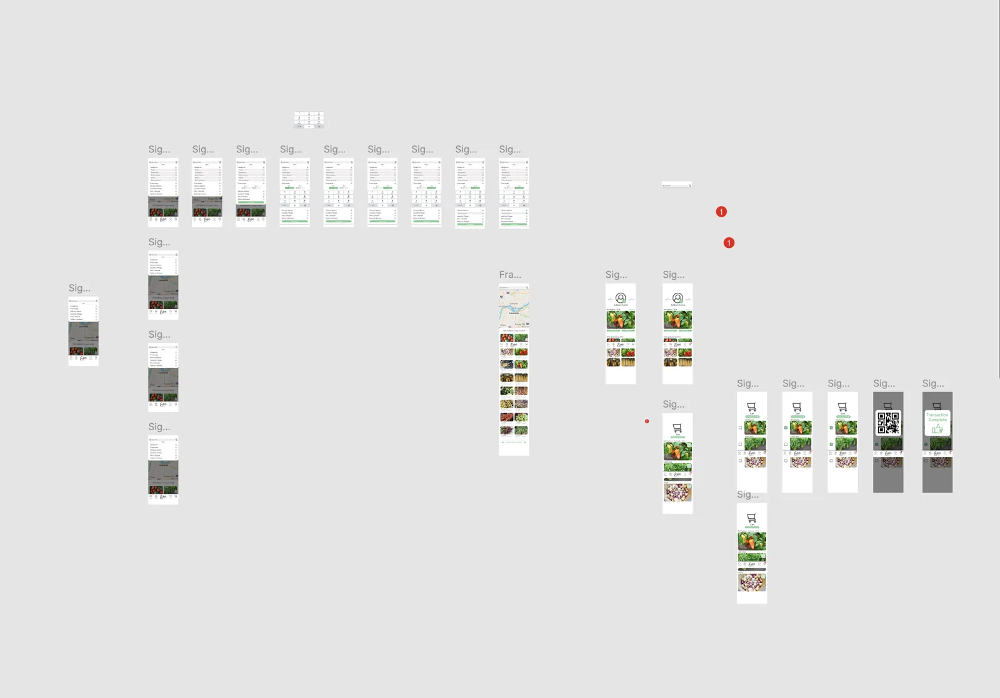
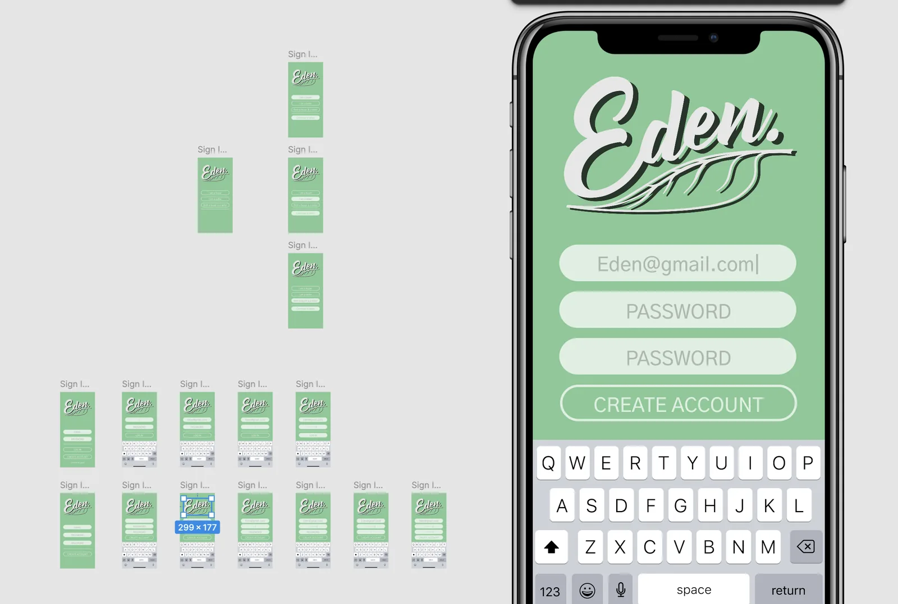
Then, in 2026, I directed Claude Code the way a creative director runs a studio: a written design directive with a NEVER list banning the generic-app vocabulary, a paste-ready brief for each build day, and every word of copy reviewed before merge. Every brief is committed alongside the code. One engineering proof: the Coach’s cold first paint went from 16 seconds to 0.26, by fetching the letter behind the brand’s leaf-draw animation.
The hardest part wasn’t building — it was refusing: the month grid, the progress bars, the trust badges, the sparkle. Next would be real payments (Stripe for cards; USDC settlement matters most where the local currency doesn’t hold), and the long thread from my 2020 notes: robot-tended backyards removing the last labor barrier between “I’d like to sell some tomatoes” and “I am, in fact, selling tomatoes.”
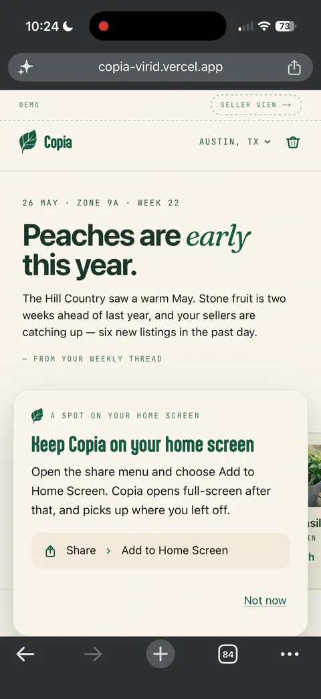
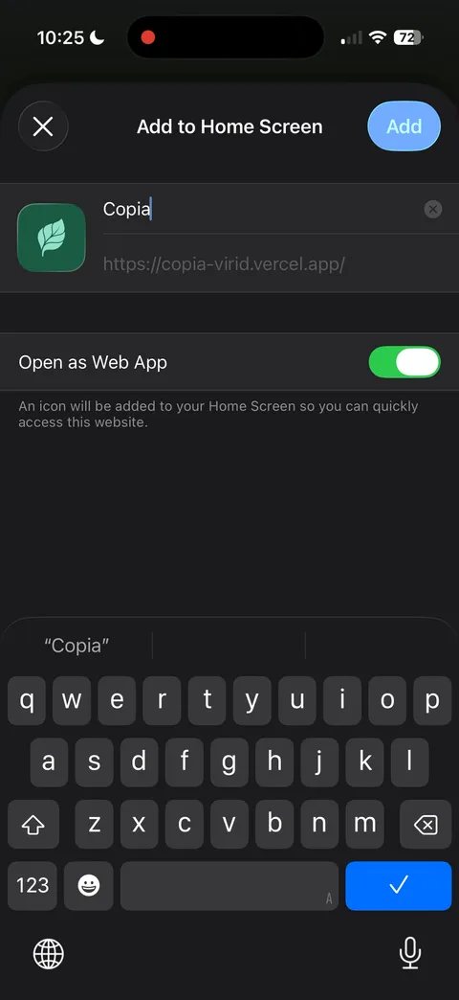
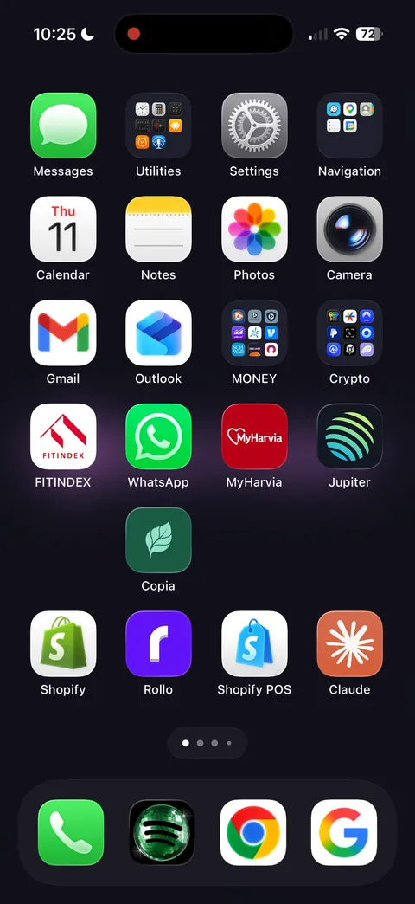
Add to Home Screen from Safari and the leaf joins the other apps. The real iPhone status bars are the point — a genuine install, not a mockup of one.
— open it in Safari on an iPhone. Put three things from three growers in your basket and settle up. For the full effect, add it to your home screen: the wordmark assembles itself on the way in.
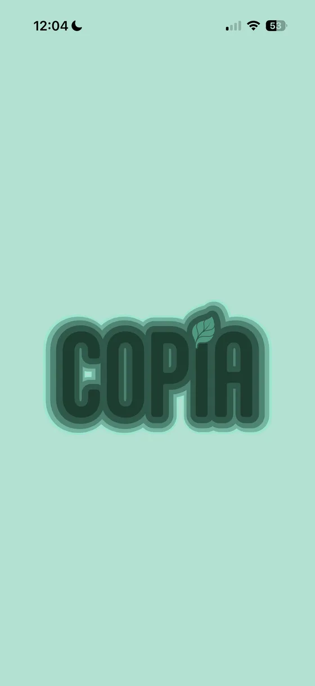